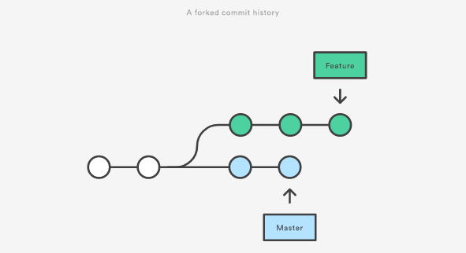

class: center, middle # CSCI 395.86 Open Source Software Development <br> ## Git Tutorial: ### Merging and Rebasing .author[ Stewart Weiss <br> ] .license[ Unless noted otherwise all content is released under a [Creative Commons Attribution-ShareAlike 4.0 International License](https://creativecommons.org/licenses/by/4.0/).<br> This content is based in large part on an article appearing in Atlassian BitBucket entitled<br> [Merging vs. Rebasing](https://www.atlassian.com/git/tutorials/merging-vs-rebasing#conceptual-overview) and released under a [Attribution 2.5 Australia (CC BY 2.5 AU)](https://creativecommons.org/licenses/by/2.5/au/) license. ] --- # Overview - Git `merge` and Git `rebase` both integrate changes from one branch into another branch, but they do it in different ways. - In a nutshell, - the `merge` command takes the changes from two different branches and creates a single, new commit record (called a __merge commit__) that combines them. whereas - the `rebase` command copies an entire branch onto the tip of the _base_ branch, effectively incorporating all of its commits onto that base branch. - Thus, instead of creating a merge commit, __rebasing re-writes the project history by creating brand new commits for each commit in the original branch.__ --- # Merging - Suppose you are working on a new feature in a dedicated branch named `feature`. Suppose that a team member updates the master branch with new commits. This results in a forked history: .center[  ] - Suppose that you want to incorporate the new commits in `master` into your `feature` branch using `merge`. --- # Merging - You can merge the master branch __into the feature branch__ as follows: ```bash git checkout feature git merge master ``` This creates a new __merge commit__ in the feature branch that combines the histories of both branches. Your project's branching structure now looks like this: .center[ ] - Notice that it creates a single, new commit record, the merge commit, in `feature`. --- # Merging - There are many forms of the `merge` command, and unless you memorize what each does, it is best to use the form from the preceding slide. Remember that: ```bash git merge branch ``` merges the changes __from__ the branch given to the command __into the currently checked out branch__, not the other way around. - If you can remember the syntax, this command: ```bash git merge feature master ``` is shorthand for ```bash git checkout feature git merge master ``` i.e., it merges the changes from master into feature. --- # Merging in the Workflow - Merging is safe because it is a non-destructive operation - <span class="blue">existing branches are not changed in any way</span>. But merging creates an extraneous merge commit each time you merge. -- - Consider a common workflow: - You are working on a feature branch in a collaborative project and there are other people working as well. They make changes and push them to an upstream repository. You pull them down into your master branch. -- - Every time that you incorporate upstream changes that are now in your master branch using `merge`, you add another merge commit, and your feature branch’s history will become "polluted" with these merge commits<span class="super">1</span>. This can make it hard for others to understand the history of the project. .footnote[ 1 There are ways to use `git log` to clean the history up a bit, but this is does not really solve the problem. ] --- # Rebasing - If you remember that the word "base" is the root of the word "rebase", then you will remember how the `rebase` command differs from the `merge` command: it moves the _base_ of the currently checked out branch to a different position in the repository's history. - Suppose once again that the project's history is as illustrated below: .center[ ] and that you want to incorporate the new commits in `master` into your `feature` branch. --- # Rebasing - You can use the `rebase` command instead of the `merge` command to do this. Namely, you can rebase the `feature` branch __onto__ the `master` branch using the following commands: ```bash git checkout feature git rebase master ``` - This finds the common ancestor of the two branches, and then moves the entire `feature` branch from where it diverged from `master` to begin on the tip of the `master` branch, as shown: .center[ ] --- # Rebasing - In effect, rebasing incorporates all of the new commits in the command's branch argument (i.e., `master` in "`git rebase master`") into the currently checked out branch. - Importantly, instead of creating a new merge commit, rebasing __re-writes the project history__ by creating new commits for each commit in the original branch. - The major benefit of rebasing over merging is that the project history is cleaner: - it eliminates the unnecessary merge commits required by `git merge`; - it results in a perfectly linear project history: you can follow the tip of feature all the way to the beginning of the project without any forks, which makes it easier to navigate the project with commands like `git log`. --- # How Rebasing Works - Git's `rebase` does the following: -- - it finds the common ancestor of the two branches (the checked-out branch and the one you are rebasing onto), -- - it gets the diff introduced by each commit of the checked-out branch (these diffs are called __patches__), -- - it saves those diffs to temporary files, -- - it resets the current branch to the same commit as the branch onto which it is rebasing, and -- - applies each change in turn. -- - There may still be conflicts in rebasing. During the rebase, Git adds each commit onto the new base one by one, by applying its patch. If it reaches a commit with a conflict, and it cannot resolve it, it will pause the rebase and resume it once the conflict is manually resolved. - When a rebase conflict occurs, Git outputs instructions for how to fix it. --- # A Rebasing Conflict - In this simple example, a file named `file3` has different content in the `master` branch from what it has in the current branch. When we run `git rebase` Git cannot complete it because it found a merge conflict when trying to apply the patch for the commit in the current branch on top of the commit for `file3` in `master`. The output is: ```bash $ git rebase master First, rewinding head to replay your work on top of it... Applying: added file1 Applying: added file2 Applying: updated file3 Using index info to reconstruct a base tree... M file3 Falling back to patching base and 3-way merge... Auto-merging file3 CONFLICT (content): Merge conflict in file3 error: Failed to merge in the changes. Patch failed at 0006 updated file3 Use 'git am --show-current-patch' to see the failed patch Resolve all conflicts manually, mark them as resolved with "git add/rm <conflicted_files>", then run "git rebase --continue". You can instead skip this commit: run "git rebase --skip". To abort and get back to the state before "git rebase", run "git rebase --abort". ``` --- # Rebasing - It is important to know __when not to rebase__, because rebasing is not without downsides: - __<span class="standout">Safety</span>__: Re-writing project history can be potentially catastrophic when you collaborate with others. To rebase safely, follow the __Golden Rule of Rebasing__, given below. - __<span class="standout">Traceability</span>__: Rebasing loses the context provided by a merge commit — you cannot see when upstream changes were incorporated into the feature. ### The Golden Rule of Rebasing The Golden Rule of Git `rebase` is to __never use it on public branches__. --- # A Bad Rebase - Consider what would happen in our example if you rebased the `master` branch onto the `feature` branch. After the rebase, it would look like this: .center[ ] - The rebase moved all of the commits in `master` onto the tip of `feature`. The problem is that this only happened in your repository, not your collaborators' repositories. They are still working with the original `master`. Since rebasing results in brand new commits, Git will think that your master branch’s history has diverged from everybody else’s. --- # A Bad Rebase - Can it be fixed? -- The only way to synchronize the two master branches after this is to merge them back together, resulting in an extra merge commit and two sets of commits that contain the same changes (the original ones, and the ones from your rebased branch). - In the end it becomes messy and confusing. - Before you run `git rebase`, always ask yourself, “Is anyone else looking at this branch?” If the answer is yes, do not rebase. --- # Interactive Rebasing - Interactive rebasing lets you alter commits as they are moved to the new branch. This is even more powerful than an automated rebase, since it offers complete control over the branch’s commit history. Typically, this is used to clean up a messy history before merging a feature branch into master. - Interactive rebasing is also used for editing the repository history, including __squashing__ commits. - `git rebase` allows you to literally rewrite history — automatically applying commits in your current working branch to the passed branch head. - Since your new commits will be replacing the old, it is important to not use `git rebase` on commits that have been pushed public, or it will appear that your project history disappeared. --- # Interactive Rebasing - To begin an interactive rebasing session, pass the `i` option to `git rebase` command: ```bash git checkout feature git rebase -i master ``` This will open a text editor listing all of the commits that are about to be moved: ```bash pick 33d5b7a Message for commit #1 pick 9480b3d Message for commit #2 pick 5c67e61 Message for commit #3 ``` - The listing displayed by the editor defines exactly what the branch will look like after the rebase is performed. - By replacing the pick command with another command and/or re-ordering the entries, you can make the branch’s history look like whatever you want. --- # Interactive Rebasing Example - In this example, if the 2nd commit fixes a small problem in the 1st commit, you can condense them into a single commit with the `fixup` command: ```bash pick 33d5b7a Message for commit #1 fixup 9480b3d Message for commit #2 pick 5c67e61 Message for commit #3 ``` When you save and close the file, Git will perform the rebase according to your instructions, resulting in project history that looks like the following: .center[ ] --- # Rebasing in the Workflow ---